A vision-language model reads system, image, and question tokens as one stream and answers from the final position. Where the question goes changes the answer. Placing it before the image (question-first, STI) makes the model commit early to an image-anchored, often wrong answer — even though it perceives the scene correctly. Re-presenting the image and question after the image (SITIT) restores the decoder's access to the question and fixes it, with no training.
This page shows the effect on clear, low-token NaturalBench yes/no cases, with a per-layer logit lens so you can watch the answer form with depth: first the problem (moving the question first flips a correct answer to a wrong one), then the fix (echoing restores it). The four prompt orderings:
| Ordering | Token sequence | Role |
|---|---|---|
| STI | System · Task · Image | question-first (the paradox) |
| SIT | System · Image · Task | question-last (baseline) |
| STIT | System · Task · Image · Task | question echo (ours) |
| SITIT | System · Image · Task · Image · Task | image echo (ours, best) |
Each image patch, projected through the output embedding, decodes to a vocabulary token; overlaying that token on the patch shows what the model sees. Each panel below reads on its own — the question and ground truth on top, the per-patch decodings in the middle, and what it proves at the bottom. The patches decode to the correct scene even when question-first then answers wrong: the paradox is a read-out failure, not a perception failure.
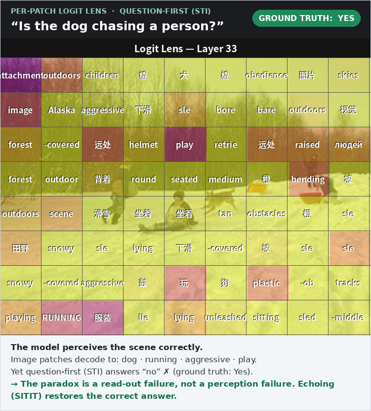
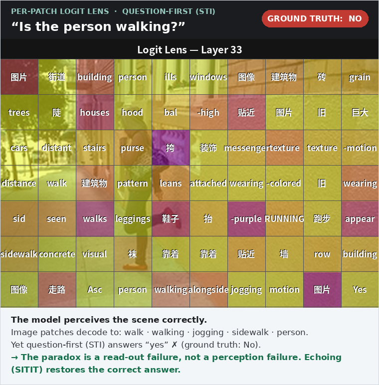
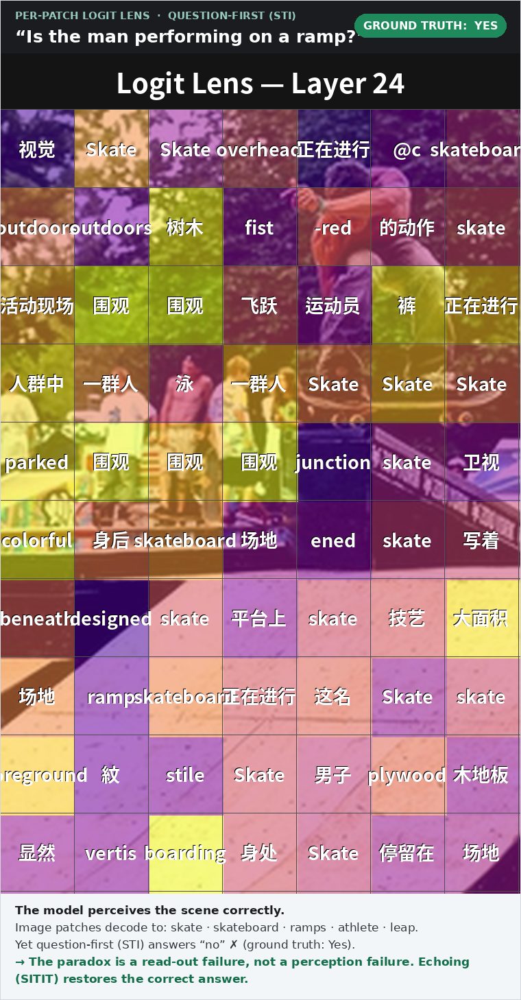
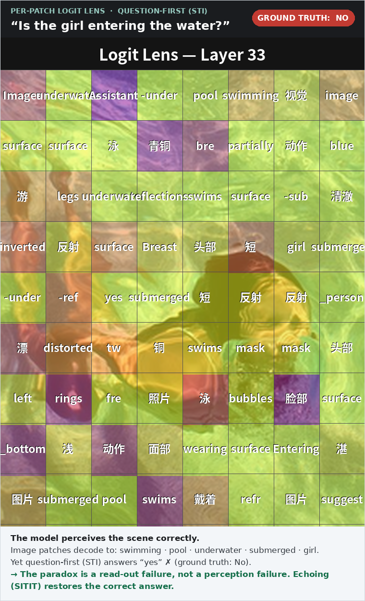
Qwen3-VL-8B, question-first (STI), a late layer. Images shown at low resolution (few, large, zoomed patches).
Same content, only the question moves. Placing it after the image (SIT) answers correctly; placing it first (STI) commits early to a wrong, image-anchored answer. Question-first trails question-last by 8–10 group-accuracy points with identical content.
| Benchmark (group accuracy) | SIT | STI |
|---|---|---|
| NaturalBench | 0.351 | 0.270 |
| Winoground | 0.318 | 0.223 |
Qwen3-VL-8B group accuracy. The animations decode one transformer layer per frame; watch the correct answer emerge under SIT and the wrong answer lock in under STI.
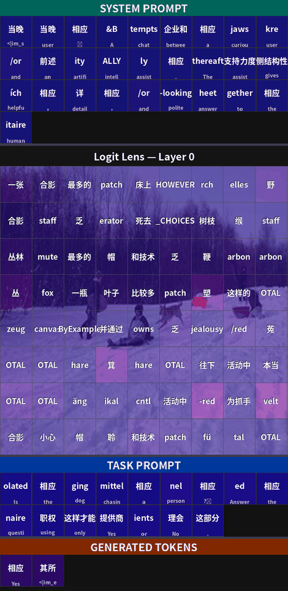
SIT (question-last) — the working baseline. Answer “yes” ✓ correct.
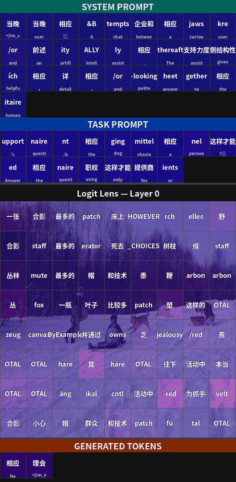
STI (question-first) — the paradox. Answer “no” ✗ wrong.
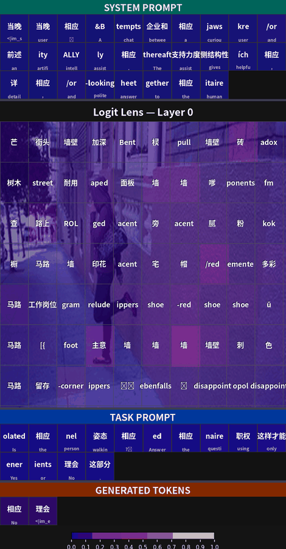
SIT (question-last) — the working baseline. Answer “no” ✓ correct.
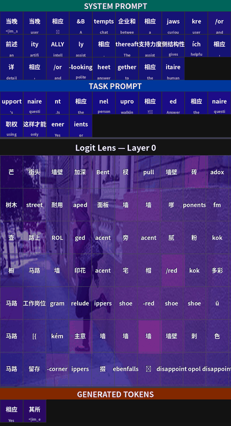
STI (question-first) — the paradox. Answer “yes” ✗ wrong.
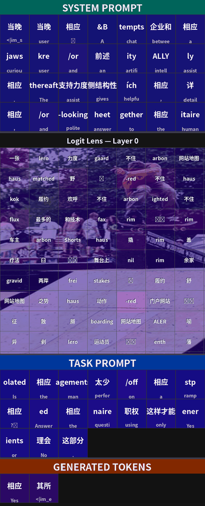
SIT (question-last) — the working baseline. Answer “yes” ✓ correct.
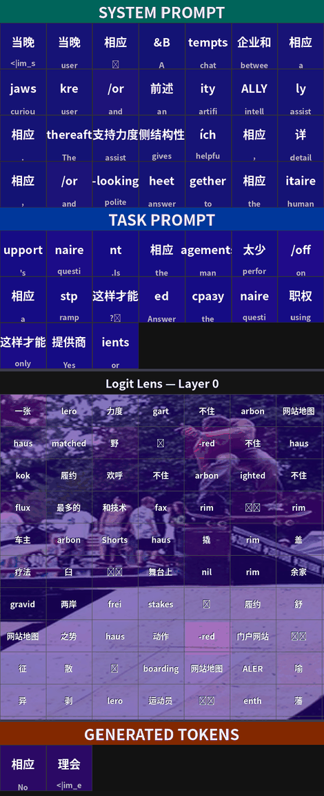
STI (question-first) — the paradox. Answer “no” ✗ wrong.
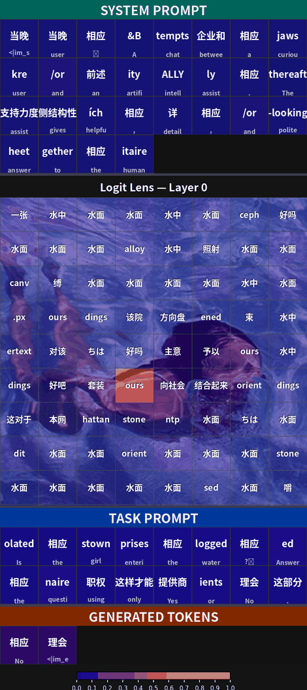
SIT (question-last) — the working baseline. Answer “no” ✓ correct.
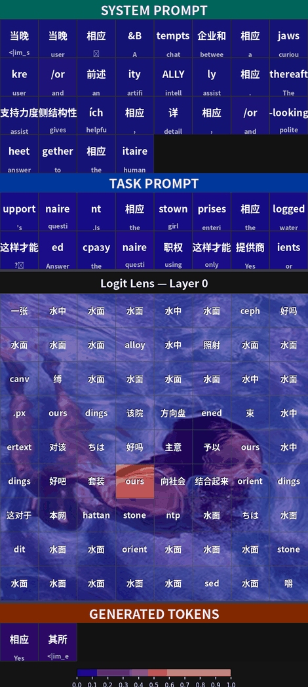
STI (question-first) — the paradox. Answer “yes” ✗ wrong.
Re-presenting the (image, question) after the image (SITIT) gives the decoder a second, adjacent look and fixes the same cases — no training. Accuracy climbs the ordering ladder from question-first (STI, worst) to image echoing (SITIT, best).
| Benchmark (group accuracy) | STI | SIT | STIT | SITIT |
|---|---|---|---|---|
| NaturalBench | 0.270 | 0.351 | 0.350 | 0.374 |
| Winoground | 0.223 | 0.318 | 0.375 | 0.403 |
Qwen3-VL-8B group accuracy. Best per benchmark in green.
STI (question-first) — still broken. Answer “no” ✗ wrong.
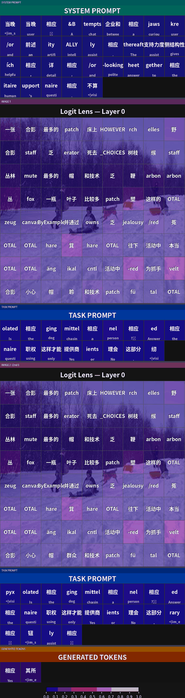
SITIT (image echo) — the fix. Answer “yes” ✓ correct.
STI (question-first) — still broken. Answer “yes” ✗ wrong.
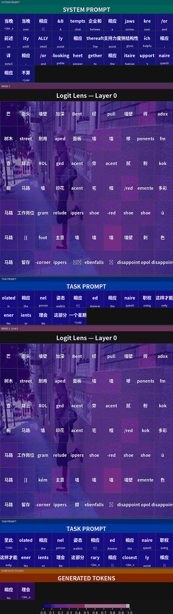
SITIT (image echo) — the fix. Answer “no” ✓ correct.
STI (question-first) — still broken. Answer “no” ✗ wrong.
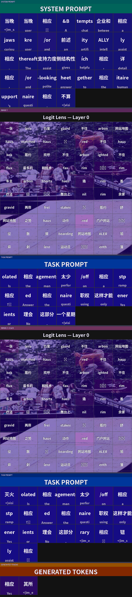
SITIT (image echo) — the fix. Answer “yes” ✓ correct.
STI (question-first) — still broken. Answer “yes” ✗ wrong.
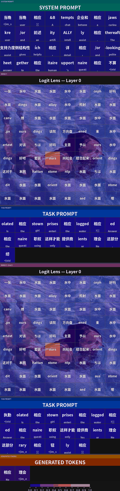
SITIT (image echo) — the fix. Answer “no” ✓ correct.
Each animation is a per-layer logit lens on Qwen3-VL-8B: the image is shown at low resolution (few visual tokens) and each frame decodes one transformer layer — the heatmap is what each image patch decodes to and the token grid is what every token, including the generated answer, decodes to. Examples are NaturalBench yes/no pairs chosen for a clear, unambiguous answer. Static supplement; the code, interactive viewer, and full result files accompany it in the repository.